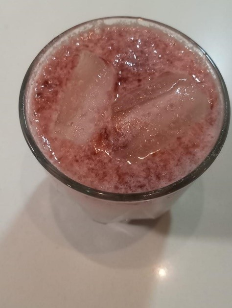

Ingredientes
- - Calpis
- - Jarabe de frutos rojos
MALTEADA
DESCUBRE LA RECETA
Esta bebida es sencilla pero deliciosa y refrescante, se prepara con calpis el cual es una bebida de origen Japones, el cual tiene un cierto toque parecido al de la leche, y ligero sabor ácido, similar a un yogur natural, este en combinación con el jarabe de frutos rojos dan como resultado está refrescante y deliciosa bebida, el cual lleva por nombre “Rojo Amanecer” en referencia a una película del 89, la cual ha tomado un valor importante para México, ya que está película retrata un momento muy significativo para la historia de México el cual fue la matanza de Tlatelolco
1. Se vierte en la licuadora el calpis

2. Se le agrega el jarabe de frutos rojos

3. Se vierte la mezcla anterior en un vaso con hielos
